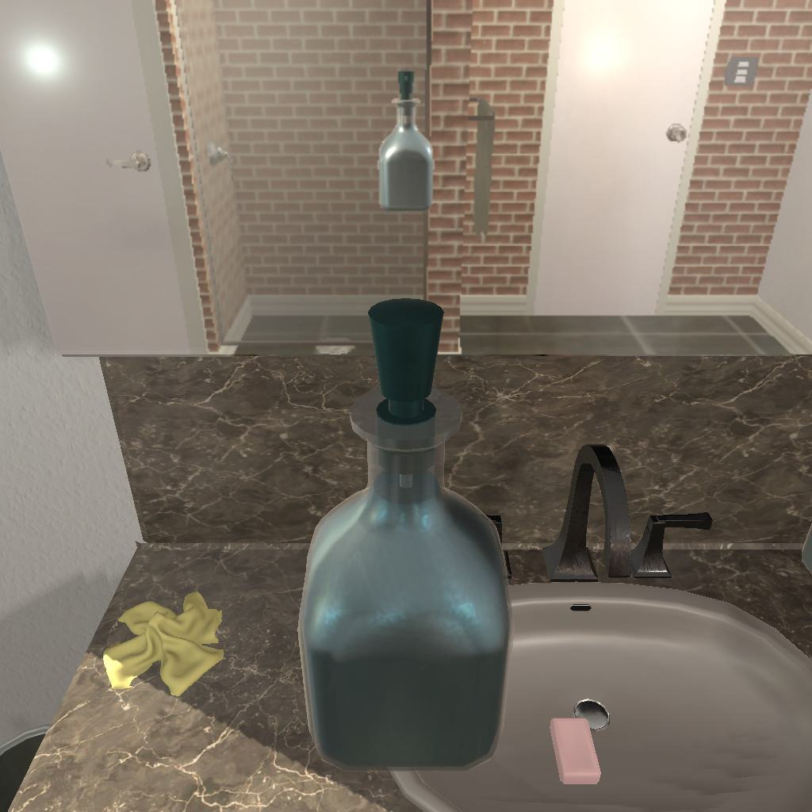

---------------------------------------------------------task: 27---------------------------------------------------------
--------------------------------------------------------------------------------------------------------------------------------------------------------------------
--------------------------------------------------------------------------------------------------------------------------------------------------------------------
Step:--------------------------------------------------------------------------9-------------------------------------------------------------------------------
----------------------------------------
VLM Prompt:
Image1:
**Instruction**
1. Analyze the provided image to identify all visible household objects, focusing on those relevant to the task description "find two soapbottle and put them in garbagecan."
2. Use the analysis of the image and the task hint "The agent must find an object of the desired type, pick it up, find the correct location to place it, put it down there, then look for another object of the desired type, pick it up, return to previous location, and put it down there with the other object." to answer the question: what is the most reasonable action in the choices for the task description "find two soapbottle and put them in garbagecan"?
4. Decide and write the answer using the template: The answer is: (i): , where i is the real number. If there is no desired object in the image, search every place based on **Initial Observation** to find the object. And if no one is exactly correct, choose a similar answer.
**Initial Observation**
You are in the middle of a room. Looking quickly around you, you can see countertop (1), sinkbasin (1-2), sink (1-2), garbagecan (1), drawer (1-2), toilet (1), handtowelholder (1)
**Answer Choices**
(1): go to garbagecan 1
(2): go to drawer 1
(3): go to drawer 2
(4): go to sink 2
(5): go to sinkbasin 2
(6): go to toilet 1
(7): go to handtowelholder 1
(8): put soapbottle 1 in/on countertop 1
(9): examine soapbottle 1
(10): examine countertop 1
**Answer**
Let's think step by step by following the instructions.
----------------------------------------
----------------------------------------
Original Response:
The task is to find two soap bottles and put them in the garbage can. From the image provided, we can see one soap bottle on the countertop near the sink. There are no other soap bottles visible in this image. Therefore, the most reasonable action would be to first examine the soap bottle we can see to confirm that it is indeed a soap bottle and not a different type of container. Based on the task hint, we need to pick up the soap bottle after confirming it's the correct object and then find the garbage can to place it in. However, since the instructions only ask for the most reasonable action at this moment, and we only see one soap bottle, the first step should be to examine the visible soap bottle.
The answer is: (9): examine soapbottle 1
----------------------------------------
----------------------------------------
>>> Refine Original VLM Response and Get Pure Action: examine soapbottle 1
----------------------------------------
-----------------------------------------------------------------
Running time: 15.512996912002563 seconds
Total Money: 9.69997
-----------------------------------------------------------------
-----------------------------------------------------------------
Text Observation:This is a normal soapbottle 1
-----------------------------------------------------------------
UNSUCCEED